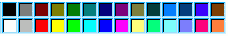

PHPaint v.2.1 TUTORIAL
July 15, 2002
Copyright 1999-2002 by Erica Andrews.
All rights reserved.
If you are looking for general information about PHPaint (system requirements, installation, etc.), read the Manual.
(example only)If you fail to do this, your images may not appear correctly (broken images), or you may see only 2 available fonts (times.ttf, shatter.ttf). After clicking the 'Font Directory...' button, a dialog will open, asking you to type in the full path of your desired font directory. When setting the font directory, you must include the trailing slash: '/var/www/html/ttf/' or 'C:\temp\fonts\', etc. Please type a FULL PATH, not an abbreviated path. Now, click 'OK'. PHPaint will load a list of available TTF fonts in the selected directory. Check the 'TrueType Font' font list (to the left of the 'Font Directory...' button)
TrueType Font: (example only)to ensure that you have set the font directory correctly and your fonts were loaded correctly. Only files with the .ttf extension (case-insensitive) will be listed in the font list.
TrueType Font: (example only)Simply select your desired font from the drop-down menu.
Font Size: (example only)This font size affects the font you just selected in Step 3. The font SIZE must be a positive integer, greater than zero. Generally, you will want to select a font SIZE between 10 and 100. Large font sizes create large images. Font sizes which are too small, may make the text on the image unreadable. Keep in mind that any font you have selected (in Step 3) may have limits on how big (or small) of a font SIZE can be used. Some fonts won't scale about a size of 72.
Text On Image: (example only)There are no restrictions on what can be typed in this field. However, PHPaint is not intended for, nor has been tested with, TEXT larger than 100 characters.
 (example only)You may also fine-tune the color by typing in an RGB value in the 'Main Image Color' text field, just above the color palette.
The RGB value in the text field, must be a comma-separated list of exactly 3 integers. Each integer must be between 0 and 255. Include NO spaces in the RGB value text field. The 'Main Image Color' makes up most of the image's color, and provides the color immediately surrounding the text drawn on the image. The 'Main Image Color' is the color of the image's main 'rectangle' and does not include the shading of the 'rectangle' (see Step 7).
(example only)
(example only)You may also fine-tune the color by typing in an RGB value in the 'Image Shading Color' text field, just above the color palette.
The RGB value in the text field, must be a comma-separated list of exactly 3 integers. Each integer must be between 0 and 255. Include NO spaces in the RGB value text field. The 'Image Shading Color' is the color of the shading of the image's main 'rectangle'.
(example only)
(example only)You may also fine-tune the color by typing in an RGB value in the 'Text Color' text field, just above the color palette.
The RGB value in the text field, must be a comma-separated list of exactly 3 integers. Each integer must be between 0 and 255. Include NO spaces in the RGB value text field. The 'Text Color' is the color of the text drawn on the image, not including the shading under the text (see Step 9).
(example only)
(example only)You may also fine-tune the color by typing in an RGB value in the 'Text Shading Color' text field, just above the color palette.
The RGB value in the text field, must be a comma-separated list of exactly 3 integers. Each integer must be between 0 and 255. Include NO spaces in the RGB value text field. The 'Text Shading Color' is the color of the SHADING of the text, and should generally be a darker color than the 'Text Color' chosen in Step 8.
(example only)
(example only)Currently, PHP (and PHPaint) support the following image formats: PNG, JPEG, GIF, and WBMP. Please be aware, that not all of these images formats will necessarily be supported by your particular build and version of PHP. If you choose an image type that is NOT supported by your PHP installation, no image will be created. The default value is 'png'. Not all PHP installations support GIF and WBMP. Generally, newer version of PHP do not support GIF, due to image compression patent problems. Most PHP installations can create at least 'png' and 'jpeg' images. However, check your particular PHP installation/build to be sure. The 'wbmp' (Wireless Bitmap) format, is used mostly by Wireless/WAP developers. Images in the 'wbmp' format can be created by PHPaint, but generally cannot be displayed by normal web browsers. You will want to have a WAP-enabled (wireless) web browser or image viewer available if you are working with the 'wbmp' format.
Link: (example only)If you want your image to be part of a link to a particular URL, type the desired URL here. If you don't know what this is for, or don't want your image linked to any URL, leave the 'Link' text field blank, and skip to Step 13.
Target: (example only)The 'target' is an element of the 'a href' tag in HTML. If you don't know what this is for, or don't want the LINK (from Step 11) to target a specific browser window, leave it blank, and move on to Step 13.
(example only)PHPaint will create a preview image.
- That you have images ENABLED for your web browserIMPORTANT NOTE: Most regular web browsers are NOT capable of displaying WBMP images. If you selected 'wbmp' as your 'Image Type' in Step 10, and are sure you have WBMP support enabled for your version/build of PHP, your image was most likely created, but unviewable by your web browser. I suggest you do a right-click, then 'Save As...' on the preview image's rectangular "place holder", save it to disk, then attempt to open the image with your own third-party tool capable of viewing 'wbmp' images (such as a Wireless/WAP web browser) just to make sure that your 'wbmp' image was created. Also, not all web browsers can display 'png' images. If you have selected 'png', please make sure you are using one of the supported browsers known to be capable of displaying 'png' images. If you selected the 'gif' image format, please be aware that most newer versions GD, the library used by PHP to create images, do not support the creation of Gif images. If your version of GD was created within the past 2 years, it probably does not support Gif images (unless you have a special 'hacked' version).
- That you correctly set the font directory for TrueType fonts (see Step 2)
- That you have SELECTED a TrueType font (see Step 3)
- That you have selected an IMAGE FORMAT supported by your version/build of PHP (see Step 10).
X-pad: Y-pad: (example only)You can enter any POSITIVE, INTEGER value into these fields bewtween 1 and infinity. Please keep in mind that increasing the values of these fields also increases the size of the image (both in screen real estate, and byte size). The 'X-pad' field controls the amount of space on the RIGHT and LEFT sides of the text drawn on the image. The 'Y-pad' field controls the amount of space above and below the text drawn onto the image.
(example only)PHPaint should immediately reload with your chosen background color as the backdrop for your 'preview' image. This Step does not change the image itself in any way.
- SELECT ALL of the text in the box 'IMG Tag For This Image' on the MIDDLE panelThat's it! If you followed these instructions, your web page should be loading an image that looks identical to the 'preview' image created by PHPaint. You do NOT need to save the 'preview' image to disk unless you want to. The text you copied from the 'IMG Tag For This Image' box will 'remember' your image, allowing you to save disk space by not having to save hard copies of images to disk. The phpimagebank.php script is only about 2.9 kb and is a much better alternative to saving numerous web page "buttons" to disk and wasting server resources.
IMG Tag For This Image:
(example only)
- COPY the text by pressing Ctrl+C
- PASTE the text into your web page by pressing Ctrl+V
- COPY the phpimagebank.php script to the SAME directory on your web server as your web page (if you haven't already put a copy there).
- LEAVE the .ttf font file for the font you selected (in Step 3 in your font directory (from Step 2). There is NO need to copy your .ttf font file anywhere.
- VIEW your web page by opening its 'http://' URL (not its local disk 'file:/' URL)